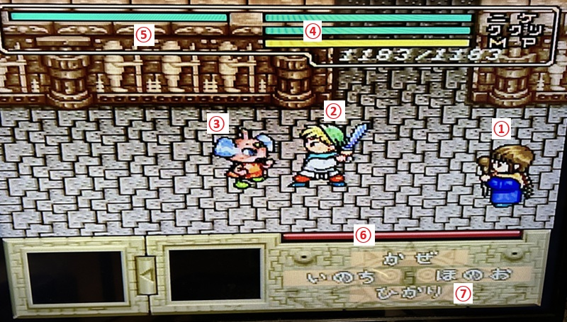

本ページは『魔法陣グルグル』（SFC）の操作方法や、戦闘システムの基本をまとめた解説です。
※画像の番号は説明用に後付けしています。
目次
戦闘以外での操作
| 操作 | 内容 |
|---|---|
| 十字キー | 移動。武器屋では左右でカテゴリ切替。 |
| Aボタン | 決定。 |
| Bボタン | キャンセル。 |
| スタートボタン | メニュー画面表示。 |
戦闘中の操作
| 操作 | 内容 |
|---|---|
| A / B / Y / X | 魔法陣シンボルの入力。A＝ほのお、B＝ひかり、Y＝いのち、X＝かぜ。 |
| 十字キー | 魔法陣シンボルの入力。A / B / Y / X を長押し中に使用。 |
| R / L | ニケの作戦コマンド切替。 |
| スタート | アイテム画面を開く。 |
※魔法陣入力は、一定時間内に入力を終えないと不発になります。
戦闘画面の見方

① ククリ：操作キャラ
② ニケ：味方キャラ
③ 敵キャラ
④ 味方のHP/MP表示：上からニケHP、ククリHP、ククリMPゲージ、ククリMP数値。
⑤ 敵のHPゲージ：敵の残り体力。
⑥ 魔法陣入力タイマー：ゲージが0になるまでに入力を完了させる必要があります。0になると、入力が終わっても魔法が発動しません。
⑦ 魔法陣の入力パネル：A/B/Y/X と十字キーでシンボルを入力します。
魔法陣の入力方法
画面に出る「ほのお／ひかり／いのち／かぜ」の文字は、A/B/Y/Xに対応しています。
A＝ほのお
B＝ひかり
Y＝いのち
X＝かぜ
入力するときは、A/B/Y/X のどれかを押しっぱなしにして、 次に表示された文字と同じ向き、または位置を十字キーで入力していきます。
これを表示される順に繰り返し、入力タイマーが0になる前に最後まで入力できると魔法が発動します。
※入力タイマーが0になると、入力し終えても発動しません。
ニケの作戦について
作戦によって、戦闘中のニケの行動が変化します。R/Lボタンで切り替えできます。
| 作戦名 | 内容 |
|---|---|
| ガンガンいっちゃえ | 防御を捨てて攻撃優先。 |
| ゆうしゃさま がんばって | バランス型。ゲーム開始時点ではこれが選択されています。 |
| むりしないでね | 防御寄りで、あまり攻撃しない作戦。 |
| まかせて ゆうしゃさま | 攻撃を捨て、完全に防御に徹する作戦。 |
街でできること
町にはセーブポイントやお店があり、ゲーム進行に応じて利用できる内容が増えます。
セーブポイントと小ネタ
セーブポイントは町の北側、赤い屋根の家です。
- ニケの母親、レナと会話するか、階段を上ることでセーブできます。
- ゲーム開始後、王様と会話する前は誰もいませんが、この時点でも階段を上ることでセーブできます。
- 父親のバドはアイテムを預かってくれます。
セーブ画面の小ネタ
セーブ画面でセレクトボタンを押しながら十字キー入力をすると、アイコンのギップルを動かせます。
セレクトボタンを離した場所によってキャラが出てきます。
- ニケのベッド：キタキタおやじ
- ククリのベッド：ねこ
- 中央タンス上側の引き出し：妖精？
- 中央タンス下側の引き出し：UFOに乗った妖精？
武器屋・道具屋・魔石屋
武器屋（剣の看板）
- 武器・防具が購入できます。売却も可能です。
- 「せつめいを聞く」で確認できますが、十字キー左右でページ切替できます。
- これを利用しないと、グローブ武器以外が確認できないので注意。
取り扱いカテゴリ
ニケ：グローブ／剣／フレイル／ハンマー／防具
ククリ：杖／防具
ニケの武器は種類によって、威力と速さ、戦闘中のモーションが変わります。
例として、グローブは威力が低いかわりに攻撃の発生が速く、ハンマーは威力が高いかわりに攻撃の発生が遅いです。
道具屋（壺の看板）
- 回復アイテムなどの消耗品が購入できます。売却はできません。
- ゲーム進行で品ぞろえが増加します。
魔石屋（布が書かれている看板）
- 聖なる塔クリア後に利用可能。
- 洗濯物が干してある家。
- 装備品に属性を付与してくれます。
召喚について
一部の「しょうかん」の魔法陣は、特定のアイテムを所持していないと効果が発揮されないものがあります。
詳しくはグルグル一覧のページで「要 〇〇」と記載しています。
メモ
※以下は自分のプレイ中に確認した挙動メモです。仕様かバグかは未検証のため、参考程度にどうぞ。
-
戦闘中に下記のククリの魔法で敵後衛を撃破した時、追加で1体分の経験値が入ることがあります。ただし、追加される経験値は1戦闘につき1体分までのようです。
確認した魔法陣：
・「せいぎのほのお」＝「ほのお」＋「ぜんたい」＋「きほん」
・「まかいのあらし」＝「かぜ」＋「ぜんたい」＋「ちから」
・「しろいキバ」＝「ひかり」＋「ぜんたい」＋「きほん」 -
召喚演出では回復動作をしますが、ククリのHPが回復しないようです。ニケのみ回復かもしれません。
「クマのマーク」＝「いのち」＋「しょうかん」＋「ようせい」
【掲載しているゲーム画面について】
本記事では、操作説明のため『魔法陣グルグル』（スーパーファミコン）のゲーム画面を一部掲載しています。
ゲーム画面・作品名・各種権利は、各権利者に帰属します。
『魔法陣グルグル』（スーパーファミコン）
©1995 衛藤ヒロユキ・TAM・TAM・ABC・電通・日本アニメーション・エニックス
最終更新日：2026/05/26